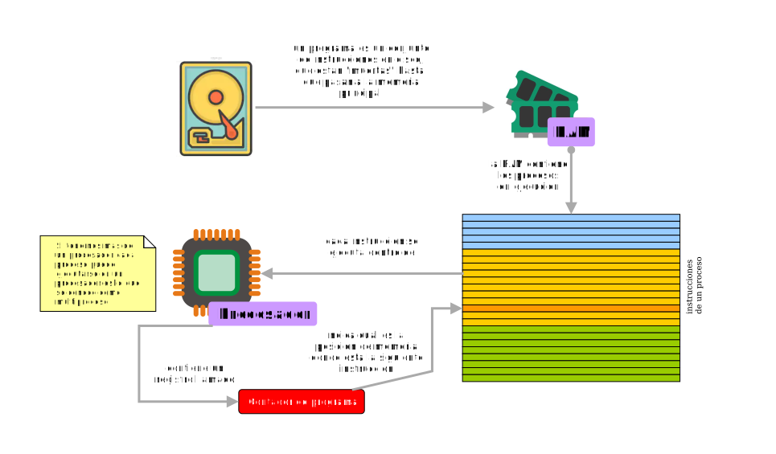
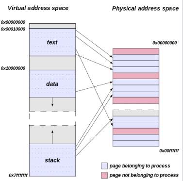

Ejecución de programas
Todos los programas que usamos en una computadora residen, de forma "inerte", en el almacenamiento secundario ( tipicamente un disco duro), hasta que pasa al memoria principal ( la RAM ) para que pueda ser ejecutada por el procesador. Cuando un programa pasa a ejecución, se toman las lineas de codigo que lo componen y pasa a la memoria principal. Un programa que se está ejecutando se denomina proceso. Un procesador solo puede atender un proceso al mismo tiempo, pero para dar la impresión de concurrecia, el procesador se turna entre diferentes procesos cargados en memoria principal, alternando de forma tan rapida que esta ejecución lineal parece concurrente. 
Ejecución de un instrucción
Los programas se dividen en instrucciones y estas a su vez son ejecutadas por el procesador siguiendo las siguientes fases:- Se lee una instrucción
- Se decodifica la instrucción
- Se encuentra cualquier dato asociado que sea necesario para procesar la instrucción
- Se procesa la instrucción
- Se escriben los resultados
Estas intrucciones constitutyen el denominado lenguaje maquina .
Durante muchos años, una de las metas principales del diseño microinformático ha sido la de ejecutar el mayor número posible de instrucciones en paralelo.
Conjunto de instrucciones
Un conjunto de instrucciones, repertorio de instrucciones, juego de instrucciones o ISA (del inglés instruction set architecture, «arquitectura del conjunto de instrucciones») es una especificación que detalla las instrucciones que una unidad central de procesamiento puede entender y ejecutar.Cualquier conjunto de instrucciones se puede implementar de varias maneras. Todas las maneras de implementar un conjunto de instrucciones dan el mismo modelo programado, y todas pueden hacer funcionar los mismos ejecutables binarios. Procesadores con diferentes diseños internos pueden compartir un conjunto de instrucciones; por ejemplo, el Intel Pentium y AMD Athlon implementan versiones casi idénticas del conjunto de instrucciones x86, aunque tienen diseños diferentes.
x86 y x86-64
La familia x86 reagrupa los microprocesadores compatibles con el juego de instrucciones Intel 8086. Por tanto, x86 representa a ese conjunto de instrucciones, siendo también una denominación genérica dada a los correspondientes microprocesadores.x86-64 (también conocido como x64, x86_64 y AMD64) es la versión de 64 bits del conjunto de instrucciones x86. Soporta una cantidad mucho mayor de memoria virtual y memoria física de lo que le es posible a sus predecesores, permitiendo a los programas almacenar grandes cantidades de datos en la memoria, pudiendo direccionar hasta 16 exabytes de memoria.
Memoria virtual
En informática, la memoria virtual es una técnica de gestión de la memoria que se encarga de que el sistema operativo disponga, tanto para el software de usuario como para sí mismo, de mayor cantidad de memoria que la disponible físicamente.Muchas aplicaciones requieren acceso a más información (código y datos) que la que se puede mantener en memoria física. Esto es así sobre todo cuando el sistema operativo permite múltiples procesos y aplicaciones ejecutándose simultáneamente. Una solución al problema de necesitar mayor cantidad de memoria de la que se posee consiste en que las aplicaciones mantengan parte de su información en disco, moviéndola a la memoria principal cuando sea necesario. Cuando se usa memoria virtual, una parte del hardware dentro de la computadora traduce las direcciones de memoria generadas por el software (direcciones virtuales) en la dirección real de memoria (la dirección de memoria física). 
La cantidad de memoria máxima que se puede tener depende de las características del procesador. Por ejemplo, en un sistema de 32 bits, el máximo es 2 elevado a 32, lo que da 4096 Megabytes (4 Gigabytes).